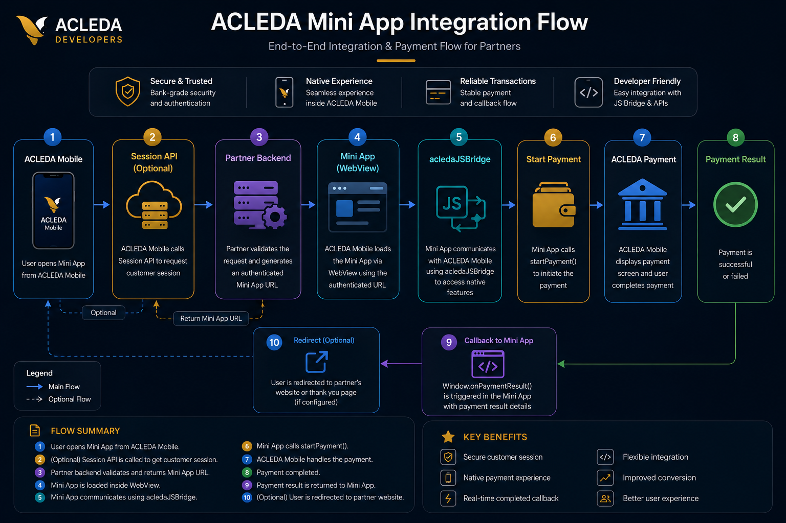
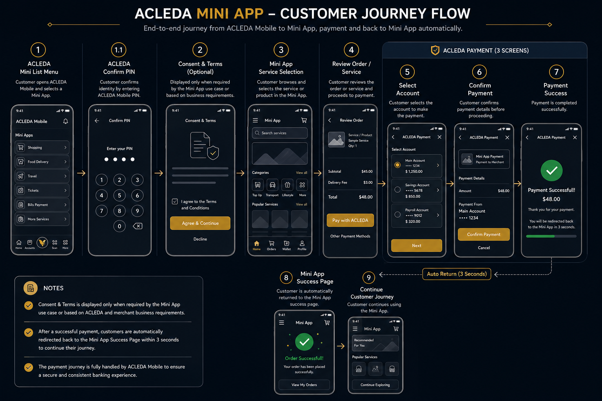

Mini App
Integration Specification
This document describes the technical integration between ACLEDA Mobile Application and Partner Mini Applications — covering Session Initialization (SSO), the native JavaScript bridge, payment flows, and callback validation.
The following flow describes the complete Mini App integration lifecycle between ACLEDA Mobile Application and partner systems. Each phase builds on the previous, from launching the WebView through to validated payment results.
Launch Mini App
ACLEDA App opens the partner Mini Application inside a secure, isolated WebView environment.
Session Initialization (SSO)
Partner may implement Single Sign-On (SSO) to automatically authenticate or register customers before launching the Mini App.
Payment Request
Mini App initiates ACLEDA payment flow through the acledaJSBridge native bridge.
Callback Result
Payment completion callback is returned to the Mini Application via
window.onPaymentResult.
window.onPaymentResult
with batchId and payment status.

This customer journey illustrates the complete user experience from launching a Mini App inside ACLEDA Mobile through payment confirmation and returning to the merchant service.

To support automatic customer login or registration, Partners may implement a Single Sign-On (SSO) API. When a customer launches the Mini App, ACLEDA Mobile invokes the Partner Session Initialization API. The Partner Backend authenticates or registers the customer, creates an authenticated session, and generates a session-based Mini App URL. ACLEDA Mobile then launches the Mini App using the returned URL.
POST /miniapp/session { "phone": "012345678", "first_name": "LyZing", "last_name": "Seak" }
Customer information shared with the Partner is subject to ACLEDA review and approval.
On success, the API returns a miniAppUrl — a signed URL containing the session token. Pass
this URL to the ACLEDA App WebView launcher to open the authenticated Mini App experience.
{ "miniAppUrl": "https://miniapp.partner.com/session/abc123" }
Mini Applications communicate with ACLEDA Mobile Application through the acledaJSBridge native
bridge. It supports both iOS WKWebView (webkit.messageHandlers.acledaIOSJSBridge) and Android
WebView (acledaAndroidJSBridge), with a unified call() method that handles both
platforms automatically.
window.acledaJSBridge = { call: function (action, data = {}) { console.log("[acledaJSBridge] Action:", action); console.log("[acledaJSBridge] Payload:", data); const payload = { action, data }; // iOS WKWebView if ( window.webkit && window.webkit.messageHandlers && window.webkit.messageHandlers.acledaIOSJSBridge ) { window.webkit.messageHandlers.acledaIOSJSBridge .postMessage(payload); return; } // Android WebView if ( window.acledaAndroidJSBridge && typeof window.acledaAndroidJSBridge.postMessage === "function" ) { window.acledaAndroidJSBridge.postMessage( JSON.stringify(payload) ); return; } console.warn("[acledaJSBridge] Native bridge not found"); } };
Mini Applications initiate the ACLEDA payment flow by calling window.acledaJSBridge.call()
with the startPayment action and the ACLEDA deeplink. Always define
window.onPaymentResult before calling the bridge to ensure the callback is
ready to receive the result.
// Step 1: Define callback BEFORE initiating payment window.onPaymentResult = function (result) { console.log("[acledaJSBridge] Payment result:", result); // result.batchId — transaction batch ID // result.status — "success" | "failed" | "cancelled" }; // Step 2: Initiate payment via native bridge window.acledaJSBridge.call( "startPayment", { acleda_deeplink: "https://epaymentuat.acledabank.com.kh/acleda?partner_id={partner_id}&payment_data={encrypted_payment_data}" } );
After payment completion, ACLEDA Mobile App invokes window.onPaymentResult directly from the
native layer via WKWebView.evaluateJavaScript (iOS) or WebView.evaluateJavascript
(Android). The Mini App must expose this function globally before initiating any payment.
window.onPaymentResult is not defined when the native layer
attempts to invoke it, the payment result will be silently lost.// Native layer calls this after payment completes window.onPaymentResult = function (result) { console.log("[acledaJSBridge] Payment result:", result); // result.batchId — transaction batch ID // result.status — "success" | "failed" | "cancelled" };
Partners may optionally configure a payment result redirect URL to return customers back to the Mini Application after payment completion. This flow enables Mini Applications to display payment result status, transaction details, or continue the post-payment experience without relying on the JS callback.
GET https://miniapp.partner.com/payment/result?batchId=847291